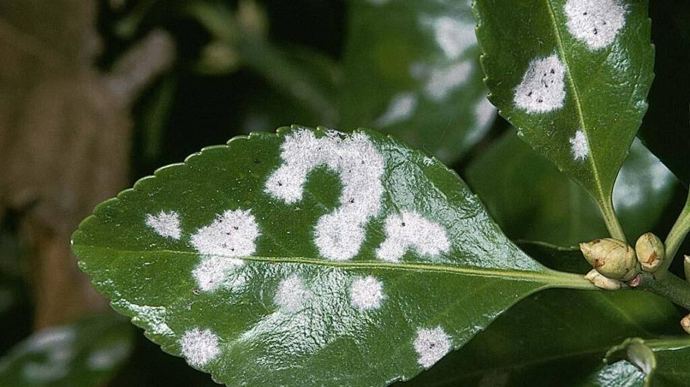

Болезни растений и меры по их спасению
Неблагоприятные условия содержания и неправильный уход провоцирует заболевания у растений. При первых признаках очень важно принять необходимые меры. Удалить пораженные участки, использовать фунгициды, исправить уход.
| Заболевание | Признаки | Лечение |
| Антракноз | На листьях пальм, фикусов и других растениях, подверженных этому заболеванию, появляются темные пятна. На концах листовых пластин могут образоваться темно-коричневые потеки. | Удалите все пораженные листья и сожгите их. Тщательно обработайте всё растение системным фунгицидом и не опрыскивайте несколько недель, сократите полив |
| Мучнистая роса | Белый мучнистый налет на листьях – так проявляется грибковое заболевание.Пораженные листья увядают, может распространиться на стебли и цветы. | Опрыскайте раствором фунгицида или опылите цветок серой. Обеспечьте доступ свежего воздуха к растению |
| Серая гниль | Серая пушистая плесень может поразить любую часть растения – стебель, листья, бутоны и цветки. Botrytis – грибок, который поражает все растения с сочными листьями. | Все пораженные части растения срезают и сжигают. Заплесневевшую землю полностью меняют, цветок обрабатывают системным фунгицидом. Уменьшают полив и опрыскивание, помещение проветривается. |
| Гниль корней | Листья (у кактуса - стебель) становятся мягкими, желтеют и увядают, впоследствии быстро темнеют и погибают. | Стряхните грунт, удалите потемневшие корни, срежьте всю гниль до здоровой ткани на всех частях растения (листья, стебли), промойте слабым раствором марганца и дайте подсохнуть. Обрежьте поврежденные листья и стебли. Посадите цветок в чистый горшок с новой землей и пролейте раствором фунгицида, опрыскайте последним и всю наземную часть. |